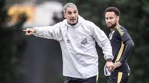
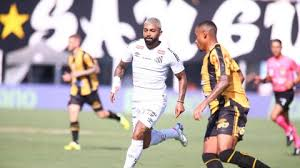
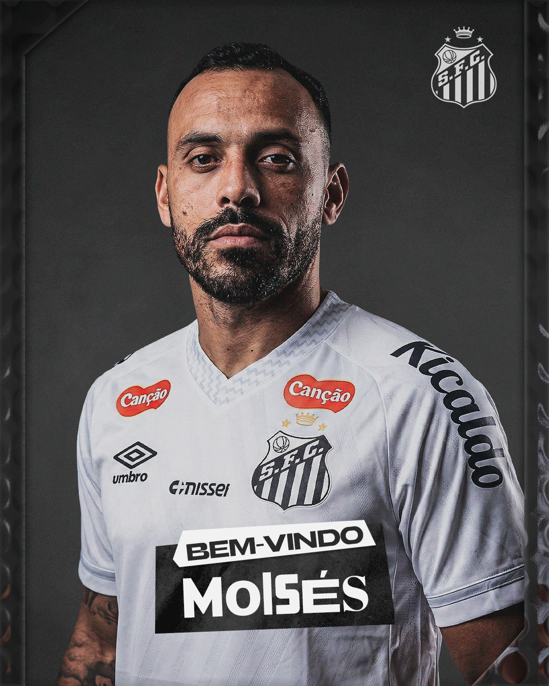
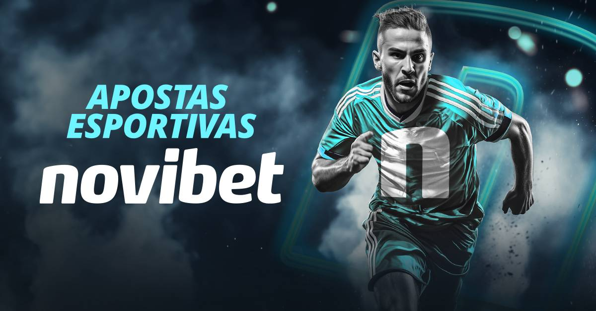
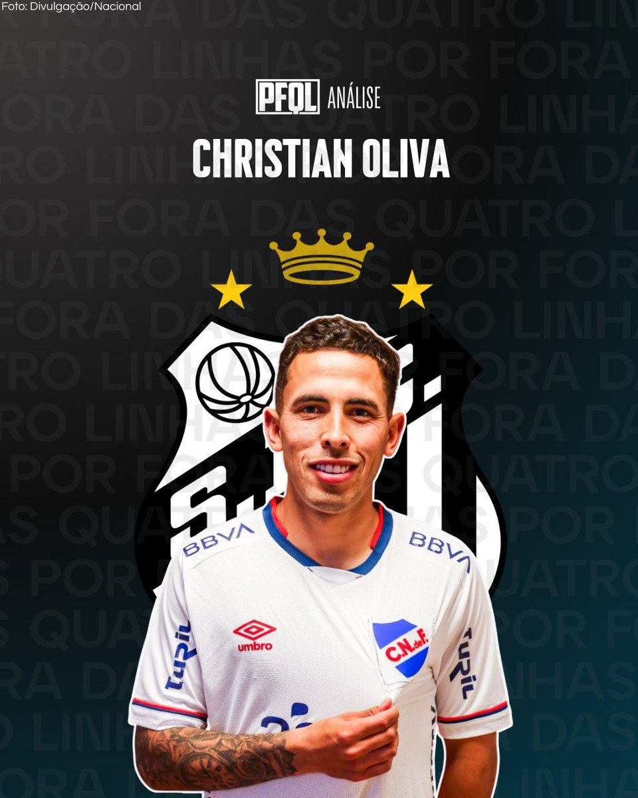

Neymar marca golaço em noite mágica.
Craque deixou zaga do Mirassol toda no chão.

Atacante chega vindo do Clube Atlético Mineiro.
Contrato de 3 anos.

Santos sofre transfer ban e fica impedido de registrar reforços.
Peixe foi condenado a pagar 2,5 milhões de euros ao Arouca, de Portugal, pelo zagueiro João Basso.

Amuleto da sorte?.
Com Neymar, Vojvoda tem apenas uma derrota no Santos.

Santos, Novorizontino e Capivariano têm escudos parecidos, mas uniformes diferentes.
Com história centenária, símbolo santista é o pioneiro do design que virou moda entre times brasileiros.

Atacante chega vindo do Fortaleza.
Contrato de 3 anos.

Santos fecha acordo com empresa de apostas NOVIBET.
Contrato prevê 35 milhões por ano.

Volante Christian chega vindo do Clube Nacional do Uruguai.
Contrato de 3 anos.